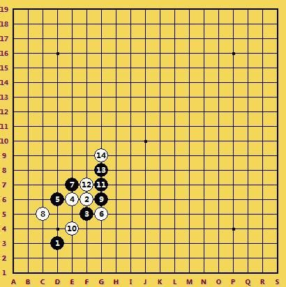
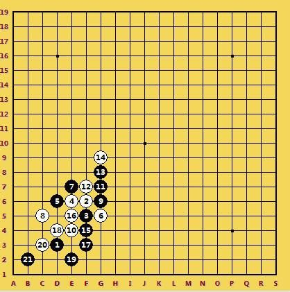
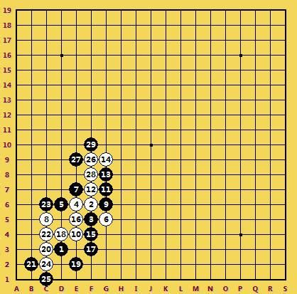
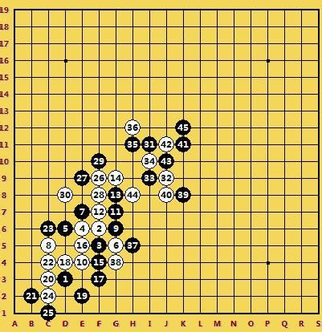
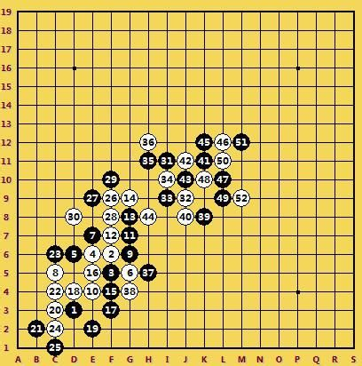
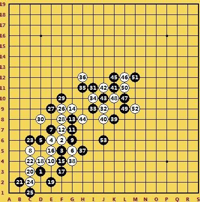
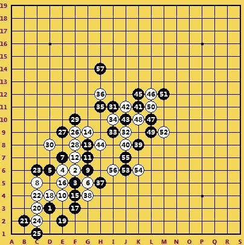
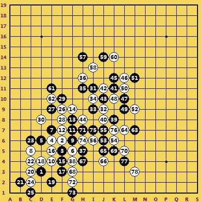
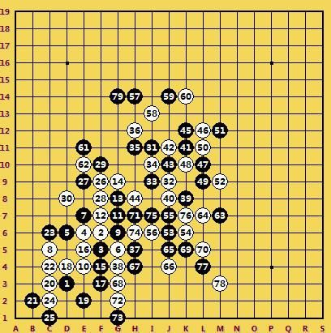
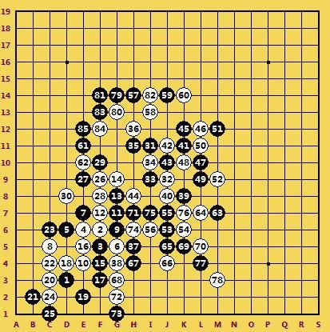

【暑假杯】游击对抗，雷厉风行----神话二台第10轮棋评
#1 【暑假杯】游击对抗，雷厉风行----神话二台第10轮棋评 作者：蓝天蓝 发表时间：2014-5-22 18:16:31
【暑假杯】游击对抗，雷厉风行----神话二台第10轮棋评
作者：侠客
对局链接：
http://game.freewzq.com/offlineDisplayGame.html?html=414420&id=2519
对局结果：【神话】benyaya胜【华电】 jixian_2013
本轮比赛对阵华电，我先手开局，依然是最常见的四三点，对手没有交换。
开局谨慎
白2对方走了F6，黑3我走了F5，因为之前输过一局这个局面，当时是执白，觉得黑棋不错，这次就这样选择了。
白4有些出乎意料，常见的白4是E4或者G6，这个白4看上去不太符合棋里，5手我很自然的挡在D6，挡二成2，此时黑棋已经形成两个2，而白棋还是没有去挡黑棋，在G6自己做一个2，与黑棋形成对攻的局面。虽然黑棋有两个2，但是靠近边界，在局面直接取胜还达不到，只能继续纠缠，力图扩大优势。黑7在E7挡住白棋的2自己又成2，这样黑棋3个活三，白棋必须得管了。对方的白8很强硬的挡在C5.开局阶段就这样基本定型了。
。

---局部纠缠，抢夺要点
黑棋在左下角取胜不可能，只能想办法把自己的连接借到右边开阔的区域，于是9手G6跳活三，10手自然挡在E4，11手G7限制住白棋的斜线，同时自己在上面成2增加子力，12手挡住黑棋活二自己成2,13手再挡白棋2，把白棋压缩在左下角，自己成眠三。G9点成为黑棋的好点，白棋抢先占领，试图把黑棋压缩在角落里。
15手选择了F4，封住了白棋一些线路，自己又做了一个连接，16手塞进E5断掉这个活二，白棋下面连接不少，于是黑17手又补了一手

18手占据好点，断掉黑棋活二，自己成活二眠三同时做出四三胜点，19手挡住冲四点，又成两个2，想与白棋在局部对攻交换。
白棋没有手软，很快20手 C3冲四，22手C4活三，黑棋挡在上面，24手再冲四，将左下角交换干净。就结果而看，黑棋在左下角的交换并不是很好。
紧接着白棋26在F9做棋，很明显是要在上面发起进攻。
24手再冲四，将左下角交换干净。就结果而看，黑棋在左下角的交换并不是很好。

27手如果盖住眠三的话，感觉也可以，但是黑棋没什么连接，所以最终选择了挡住活二，自己还成一个二，如上图所示。28手对方冲四交换。到这里感觉基本双方局势平衡，都有机会。
----把握机会，天外飞招
对方30手挡在了D8，有些出人意料，因为黑棋在左下是不够取胜的，这样把右上角给黑棋放开了，31手我终于飞出去了，占据了整个外势。
对方突然意识到右边的威胁，开始重点布防，32手抢占黑棋的关键点，但33手I9以后，不仅断了白棋连接，自己又形成了两个连接，依然保持优势。34挡住跳活二，因为黑棋一旦活三以后，再做连接白棋就挡不住了。35 H11挡2,36 走在了H12，担心黑棋向上发展，但漏了黑棋31 35这个活二。
37跳活三，39 K8做棋继续把优势往右边带，因为右边很开阔，是用武之地。黑棋彻底占据主动权。

40手J8贴身防守，41手K11跳三，42手挡中间反三，43手反冲四，44挡进去，45再外面挡住白棋活二，依然占尽优势

白棋担心黑棋继续向右扩大优势，46手L12挡住黑棋眠三，47手L7继续拓展棋型，48 K10强防，49 L9挡住白棋的二，同时自己成两个2,对手只能活三来防守，50手L11活三，51挡在外面，52再防在M9。白棋这几步的交换应该说很不错，暂时守住了黑棋的进攻。
就现在局面黑棋没有简单胜，37 39 49这个眠三，我想先保留住，留到需要的时候用，若黑棋现在到上面进攻，白棋占领J7以后将会对黑棋造成威胁，于是53手我先占领J6，这样的话对方就不会再去占J7


对手54走在K6，白棋果然没有管黑棋的眠三，55 J7冲4，57把战线拉到了上面，现在上面更为开阔，切 37 39 49这个眠三将来也可以借到上面。
58自然挡在I13,59手盖在J14,挡二成二，K14则成为黑棋要点，所以60对手赶快挡在K14，这样定型以后，黑棋下面的眠三再很难借到左上角了。

61手E11做棋强攻，一子通三路，62挡E10强防
K14，这样定型以后，黑棋下面的眠三再很难借到左上角了。
由于左上角没有算到简单的杀，而又下角地盘还稍微开阔，担心在上面攻不出来，白棋在下面成事，所以决定先把右下角交换干净再到上面发动进攻。63手 M7做杀,64挡在L7自己成一个2,65手J5挡二成眠三继续纠缠，由于下面黑棋可以出来东西，所以白棋只能盖在J4，试图包住黑棋。其实黑棋并不担心，因为右下角只为占据空间让白棋将来没有机会，保住先手即可
67手占据白棋要点H4，同时自己做了两个活二，对手只得继续跟防，68手G3防守，69 K5做棋，70手挡在L5封住黑棋。71手继续在H7做棋，对方可能担心下面这个眠三的影响，72先进行了冲四，把左边的眠三和右边隔断，然后74才挡在H6，这样黑棋在I7、L4两个点进行冲四，下面就交换干净了，空间也压缩的差不多了，可以没有后顾之忧的去上面展开进攻。

---战场转移，一路高歌
79手的选择比较多，比如H16、F14等，终选择了G14如图所示，这个点不仅封住了白棋的一条斜线，同时自己成一个眠三，感觉形势非常好
80手对方走了H13，担心黑棋活三，但漏掉了黑棋这个眠三，81抓住机会冲四，然后83在F13做棋，形成众多连接。
font face="宋体" >等，终选择了G14如图所示，这个点不仅封住了白棋的一条斜线，同时自己成一个眠三，感觉形势非常好

对方已经意识到无法防守了，匆匆走了84手F12，85手我E12活三，对方就认输了。
简单总结全盘，前26手在角落里的交换白棋略占优势，白棋30手走弱，导致黑棋拿到一个大先手，到处做棋，让白棋防守压力很大出现失误。62手以后，黑棋在右下角先进行了交换，后经拆解发现，63手可以直接在上方进攻取胜。白棋这盘的争先意识不是很强，是输棋的主要原因